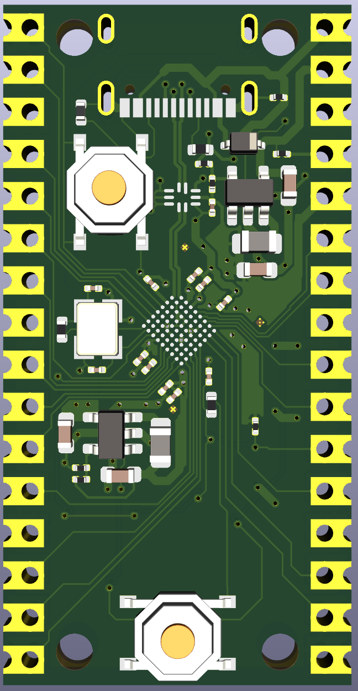
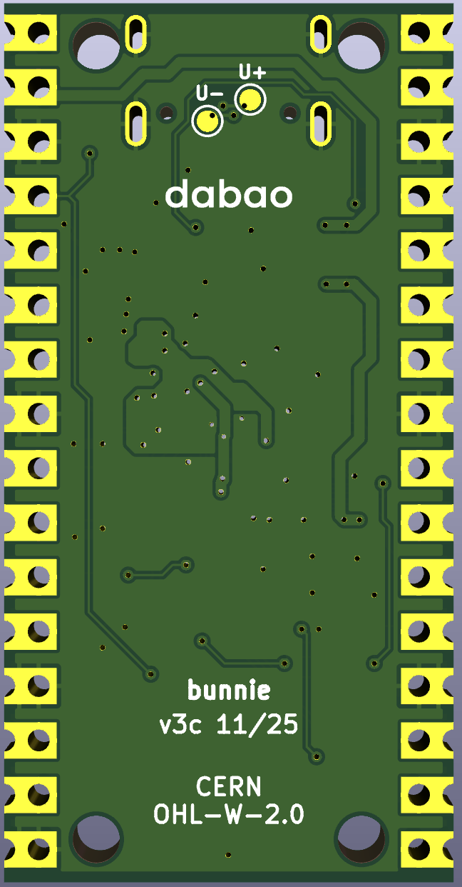

| Pin | Name | GPIO | BIO | SPI | SD Card | I2C | UART | PWM | ADC |
|---|---|---|---|---|---|---|---|
| GPIO_PC13 | BIO29 | QSPI1_CS1 | |||||
| GPIO_PC12 | BIO28 | QSPI1_CS0 | SDCMD | ||||
| GPIO_PC11 | BIO27 | QSPI1_CLK | SDCLK | ||||
| GPIO_PC10 | BIO26 | QSPI1_D3 | SDD3 | ||||
| GPIO_PC9 | BIO25 | QSPI1_D2 | SDD2 | ADC0 | |||
| GPIO_PC8 | BIO24 | QSPI1_D1 | SDD1 | ||||
| GPIO_PC7 | BIO23 | QSPI1_D0 | SDD0 | ||||
| GPIO_PC3 | BIO19 | SPI2_CS0 | PWM2[3] | ||||
| GPIO_PC2 | BIO18 | SPI2_D1 | PWM2[2] | ||||
| GPIO_PC1 | BIO17 | SPI2_D0 | PWM2[1] | ||||
| GPIO_PC0 | BIO16 | SPI2_CLK | PWM2[0] | ||||
| GPIO_PB14 | BIO14 | UART2_TX | |||||
| GPIO_PB13 | BIO13 | UART2_RX |


| Pin | Name | GPIO | BIO | SPI | SD Card | I2C | UART | PWM | ADC |
|---|---|---|---|---|---|---|---|
| EN | |||||||
| GPIO_PB5 | BIO5 | ||||||
| GPIO_PB4 | BIO4 | ||||||
| GPIO_PB3 | BIO3 | PWM1[3] | |||||
| GPIO_PB2 | BIO2 | PWM1[2] | |||||
| RST_N | |||||||
| GPIO_PB1 | BIO1 | PWM1[1] | |||||
| GPIO_PB11 | BIO11 | SPI2_CS0 | I2C0_SCL | ||||
| GPIO_PB12 | BIO12 | SPI2_CS1 | I2C0_SDA | ||||